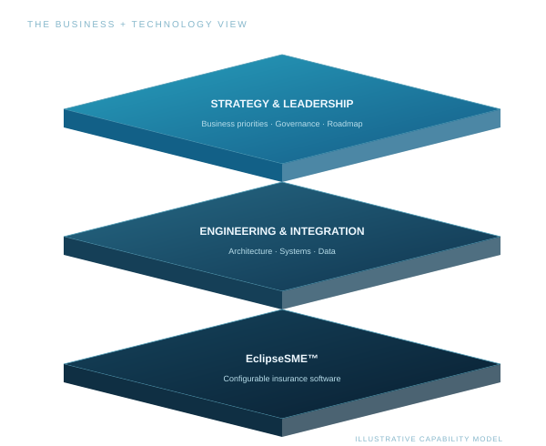

Technology strategy & consulting
Assess your landscape, define priorities and build a practical modernization roadmap.
EclipseIQ helps insurance organizations align technology with operations — through strategic consulting, fractional leadership and software built around the business.

Engage us for a specific challenge or connect our capabilities across your transformation.
Executive perspective and practical technical work, aligned to your insurance operations.
Discuss an engagementAssess your landscape, define priorities and build a practical modernization roadmap.
Custom development, solution architecture, integrations and data migration.
Experienced leadership for technology decisions, operational change and complex delivery.
Policy administration at the core.
EclipseSME™ brings underwriting, policy administration, billing and reporting into a configurable cloud platform for MGAs, insurers and specialty insurance businesses.
EclipseIQ Technologies Inc. is a Canadian insurance technology company drawing on decades of executive leadership and hands-on experience in insurance technology, operations and digital transformation.
Our work spans architecture, systems modernization, data and analytics, reinsurance and enterprise transformation — connecting technology choices with operational priorities.
A technology roadmap, delivery expertise or experienced leadership. Start with a conversation.